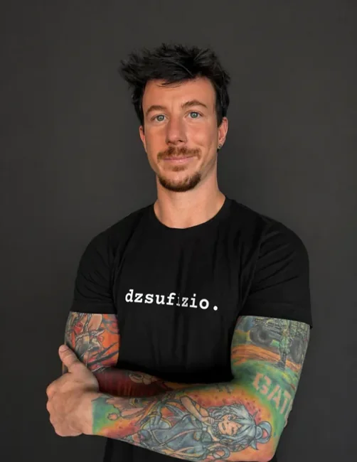

Virág Tamás
gyógymasszőr és csontkovácsGyerekkorom óta meghatározó része az életemnek a sport.
Ismerj meg közelebbről
Először sportedzőként és személyi edzőként végeztem, majd az anatómia és a reumatológia iránti érdeklődésem továbbvitt az egészségügy, a gyógymasszázs, később pedig a manuálterápia világába.
Ehhez azért a saját testem is adott némi ösztönzést. Elég sérülékeny sportoló voltam, így a rehabilitációs kezelésekből lényegében végigjártam az étlapot A-tól Z-ig. Akkoriban még imponált is, hogy a kórházban az orvosok névről ismernek. Utólag belegondolva azért szerencsésebb lett volna, ha valamilyen más teljesítményemmel teszek szert ekkora ismertségre. A szüleim idegrendszere egészen biztosan értékelte volna.
Közben egyre inkább érdekelt, mitől sérülünk meg, miért fáj valami, és mit tehetünk azért, hogy jobban legyünk. Ha akkor tudom azt, amit most, valószínűleg jó néhány felesleges körtől és aggodalomtól megkímélhettem volna magamat.
Ez a felismerés indított el azon az úton, amelyen ma is járok: folyamatosan tanulni, és a megszerzett tudással másoknak is segíteni, legyen szó sportolóról vagy valakiről, akinek a hét legkomolyabb fizikai kihívása a bevásárlás felcipelése.
Szakmai hátterem és szemléletem
Aktív sportolói éveimet hátrahagyva, a harmincas éveimben már én is találkozom reggeli derékfájással, merev nyakkal, izomgörccsel és olyan mozdulatokkal, amelyek után az ember egy pillanatra megáll, és átgondolja az életét. Szóval ismerős, amikor szeretnél egyszerűen csak felkelni, lehajolni, edzeni vagy végigdolgozni egy napot, de a testednek ehhez külön véleménye van.
A munkám során ezért különösen fontosnak tartom megérteni, mi válthatja ki, és mi tarthatja fenn a panaszaidat.
Amikor fáj valamink, természetes, hogy szeretnénk megtalálni azt az egy dolgot, ami az egészért felelős. Egy rossz mozdulatot. Egy régi sérülést. Egy „elcsúszott” alkatrészt, amit valaki visszatesz, és mehetünk tovább. A valóság viszont sokszor ennél árnyaltabb: a terhelésünk, a mozgási szokásaink, a pihenésünk és a stressz együtt alakíthatják, hogyan érezzük magunkat.
Milyen helyzetekben kereshetsz
Ülőmunka közben például könnyen azon kapjuk magunkat, hogy a vállunk a fülünk mellett, a fejünk pedig már majdnem bent van a monitorban. Ha órákig alig változtatunk ezen, a nap végére jelentkezhet nyak-vállövi merevség, kellemetlenség. Vagy ott a féloldalas válltáska, amelyben a szükséges holmikon kívül biztonság kedvéért egy kisebb háztartást is magunkkal viszünk. Egyik sem automatikusan a fájdalom oka, de érdemes lehet megnézni, nálad számítanak-e.
Ezek az apróságok ritkán jutnak eszünkbe elsőként, amikor magyarázatot keresünk. Addigra gyakran már túl vagyunk néhány internetes keresésen, és a ChatGPT-től is megkérdeztük, hogy érdemes-e még tartós tejet vennünk.
Szolgáltatásaink a fizikai közérzet javítását szolgálják. Nem helyettesítik az orvosi vizsgálatot, diagnózist, kezelést vagy a szükséges gyógytornát.
A hétköznapokba illő változtatások
Én abban szeretnék segíteni, hogy a sok lehetséges magyarázat között találjunk néhány valóban használható kapaszkodót. Megnézzük, mi befolyásolja a panaszaidat, min érdemes változtatni, és mi az, ami miatt teljesen feleslegesen aggódsz.
Lehetőleg úgy, hogy közben ne kelljen feladnod a munkádat, a hobbidat vagy a családodat. Utóbbi egyébként sem része a kezelési tervnek.
Sokszor néhány észszerű változtatással is el lehet indulni: egy kis tudatos odafigyeléssel, a terhelés átgondolásával, szükség esetén néhány otthoni gyakorlattal. Olyannal, amit ténylegesen meg is tudsz csinálni, akár a tévé előtt. A kedvenc sorozatodról sem kell feltétlenül lemondanod miatta.
Stressz és fájdalom
És van még valami, ami mellett nem szeretnék elmenni: a stressz.
Erről személyesen szívesen tartok egy kisebb mesedélutánt is. Eskü, hasznos lesz.
Hogyan reagál a testünk?
A stresszt hajlamosak vagyunk úgy kezelni, mintha kizárólag fejben történne, közben a testünk is aktívan részt vesz benne. Megváltozhat a légzésünk, megfeszülhetnek az izmaink, romolhat az alvásunk, és működésbe lépnek a szervezet stresszrendszerei. Ennek részeként többek között adrenalin és kortizol szabadul fel. Ezek teljesen normális, szükséges folyamatok: segítenek alkalmazkodni a kihívásokhoz. A nehézség akkor kezdődhet, ha a készenléti állapot tartóssá válik, és kevés lehetőségünk marad regenerálódni.
Fokozott fájdalomérzékenység
A tartós stressz a fájdalmat feldolgozó idegrendszeri folyamatokat is befolyásolhatja, és hozzájárulhat a fokozott fájdalomérzékenységhez. Ehhez kapcsolódik a szenzitizáció fogalma: leegyszerűsítve az idegrendszer érzékenyebben reagálhat a beérkező jelzésekre. Olyan ez, mintha a riasztónkat túl érzékenyre állítanák. Korábban egy betörési kísérlet kellett a szirénához, most meg a szomszéd macskája is elég hozzá.
Ilyenkor egy egyébként elviselhető terhelés is fájdalmasabbnak érződhet, és bizonyos esetekben korábban fájdalmatlan ingerek is fájdalmat válthatnak ki. A fájdalom tehát valós, miközben az erőssége nem feltétlenül mutatja meg pontosan, mekkora szöveti probléma áll mögötte. Ez nem minden panasz magyarázata, de fontos része lehet a képnek.
És mielőtt a kortizolt kinevezzük minden bajunk felelősének: a folyamat ennél összetettebb. Tartós stressznél a stresszrendszer szabályozása változhat meg; nem egyszerűen arról van szó, hogy „sok a kortizol, ezért minden fáj”. A stressz és a fájdalom ráadásul kölcsönösen erősíthetik egymást. Fáj, ezért aggódsz és rosszabbul alszol; kialvatlanul, feszülten pedig nehezebb elviselni a fájdalmat. Kész is a körforgás, amelyre valószínűleg senki nem szeretett volna előfizetni.
Mi változhat meg nyaraláskor?
Gondolj egy jól sikerült nyaralásra. Kellemes idő, kevesebb kötelezettség, több pihenés. Előfordult már, hogy olyankor a nyakad, vállad vagy derekad is kevésbé fájt?
Pihenés és fájdalomérzet
Ebben a szervezet saját fájdalomcsillapító rendszerei is szerepet kaphatnak. Az endorfinok és az endokannabinoidok hozzájárulhatnak a fájdalom csökkenéséhez és a kellemes közérzethez. A köznyelvben „boldogsághormonként” emlegetett dopamin, szerotonin és oxitocin szintén részt vesznek a hangulat, a jutalmazás, a kapcsolódás és a fájdalom szabályozásában – bár nem mind hormon, és a hatásuk sem egyforma. A szervezetünkben nincs olyan egyszerű kapcsoló, amely leállítja a kortizolt, és elindítja helyette a boldogságot. Pedig kétségtelenül lenne rá kereslet.
Nyaralás közben tehát több minden változhat egyszerre: az alvásod, a mozgásod, a figyelmed, a terhelésed és az, mennyire érzed magad felszabadultnak. Ezek együtt befolyásolhatják a fájdalomélményt.
Vissza a hétköznapokba
Aztán hazafelé megpillantod az „Üdvözöljük Magyarországon!” táblát, eszedbe jut a másnapi munka, a megválaszolatlan üzenetek és az elintéznivalók, és idővel a megszokott panaszaid is visszatérhetnek. Ilyenkor könnyű rögtön a párnára vagy az autóülésre gyanakodni. Lehet, hogy azoknak is volt szerepük, de érdemes a teljes képet megnézni.
Ezért érdekel a fájó testrészed mellett az is, hogyan telnek a napjaid. Szeretném, ha értenéd, mi befolyásolhatja a panaszaidat, és milyen lehetőségeink vannak a javulásra. A személyre szabott kezelés, a megfelelő mozgás és a regeneráció támogatása ebben egyaránt helyet kaphat – természetesen a kompetenciahatáraimon belül.
Mire számíthatsz az első alkalommal
Először átbeszéljük a panaszaidat, a korábbi sérüléseidet és azt, hogyan telnek a napjaid. Elmondhatod, milyen mozgás vagy terhelés fontos neked, és mire jut időd otthon. Ha van releváns leleted vagy orvosi útmutatásod, hozd magaddal. A választott szolgáltatáson belül az állapotodhoz és a visszajelzéseidhez igazítjuk az alkalmat; ha más ellátás indokolt, ezt is megbeszéljük.
Videók a munkámról
1. videó
2. videó
3. videó
4. videó
5. videó
6. videó
Időpontfoglalás
Szeretettel várlak a Dzsufiziónál, Budapest XXI. kerületében. Az aktuális szolgáltatásokat és árakat a foglalás előtt is át tudod nézni. Ha kérdésed van, írj nekünk.